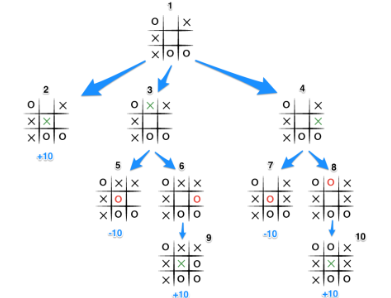

v.
Game Theory
Game Theory
- A branch of mathematics studying decision making
- A game is a system where one or more players choose actions; the combination of these choices lead to each agent receiving a payoff
- Important applications in economics, ecology and social sciences as well as AI
The Prisoner's Students' Dilemma
- Two students, Alice and Bob, are suspected of copying from each other
- Each is offered a deal in exchange for information
- Each can choose to betray the other or stay silent - no communication before they make the choices
- If both stay silent, both receive a C grade
- If Alice betrays Bob, she gets an A whilst Bob gets expelled
- If Bob betrays Alice, he gets an A whilst Alice gets expelled
- if both betray each other, both get an F
Payoff Matrix
| A Silent | A Betray | |
|---|---|---|
| B Silent | A:40 B:40 |
A:70 B:-100 |
| B Betray | A:-100 B:70 |
A:0 B:0 |
Which strategy are you going to choose if you and your best friend were caught?
Is that the best both of you can do?
Nash Equilibrium
- Consider the situation where both have chosen to betray
- Neither person has anything to gain by switching to silence, assuming the other person doesn't also switch
- Such as situation is called a Nash Equilibrium
- If all players are rational (in the sense of wanting to maximising payoff), they should converge upon a Nash Equilibrium
Does every game have a Nash Equilibrium?
| A Rock | A Paper | A Scissors | |
|---|---|---|---|
| B Rock | A: 0 B: 0 |
A: +1 B: -1 |
A: -1 B: +1 |
| B Paper | A: -1 B:+1 |
A: 0 B: 0 |
A: +1 B: -1 |
| B Scissors | A: +1 B: -1 |
A: -1 B: +1 |
A: 0 B: 0 |
No!
Nash Equilibrium for
Rock-Paper-Scissors
- Committing to any choice of action can be exploited
- E.g. if you always choose paper, I choose scissors
- If we try to reason naively, we get stuck in a loop
- If I choose paper, you'll choose scissors, so I should choose rock, but then you'll choose paper, so I'll choose scissors, so you'll choose rock, so I choose paper, ...
- The optimum strategy is to be unpredictable
- Choose rock with probability $\frac{1}{3}$, paper with probability $\frac{1}{3}$, and scissors with probability $\frac{1}{3}$
Mixed Strategies
- A mixed strategy assigns probabilities to actions and chooses one at random
- In contrast to a pure or deterministic strategy, which always chooses the same actions
- If we allow mixed strategies, every game has at least one Nash Equilibrium
Guess $\frac{2}{3}$ of the Average
- Everyone guesses a real number (decimals are allowed) between 0 and 100 inclusive
- The winner is the person who guesses closest to $\frac{2}{3}$ of the mean of all guesses
- Example:
- if the guesses are 30, 40,and 80
- then the mean is $\frac{30+40+80}{3}=50$
- so the winning guess is 30, as this is the closest to
$\frac{2}{3} \times 50=33.333...$
Rationality
- Rationality is a useful assumption for mathematics and AI programmes
- However, it's important to remember that
humans aren't always rational!
Markov Decision Process and Games
Markov Decision Process
A Markov Decision Process (MDP) is defined by:
- A finite set
$S$of states - A finite set
$A$of actions $P(s,a,s')$is the probability that action$a$in state$s$leads to state$s'$$R(s,a,s')$is the reward received from performing action$a$in state$s$and ending up in state$s'$
The Markov Property
- Given state
$s$and action$a$, the next state$s'$is determined by$P(s,a,s')$ - The previous states before
$s$has no effect - Hence and MDP is memoryless
- (or rather, any memory has to be contained within the state)
(Non)determinism
- MDP defines
$P(s,a,s')$ - From state
$s$and action$a$, there may be several possible states$s'$ - MDPs are nondeterministic i.e. stochastic
- If we have
\[ P(s,a,s')=\begin{cases} 1, & for\space some\space s' \\ 0, & for\space all\space other\space s' \end{cases} \]
then the MDP is deterministic - In the deterministic case, the same state
$s$and action$a$always leads to the same state$s'$
Markov Decision problems
- A policy for an MDP is a function $\pi: S \to A$
- i.e. in state $s$, choose action $a$=$\pi$($s$)
- Goal: find $\pi$ which maximises the total reward over time
Multi-agent MDPs
- We have assumed a single agent choosing a policy $\pi$
- We can extend to $n$ agents choosing policies $\pi_1,\pi_2,\cdots,\pi_n$
- The "action" is now a combination $(a_1,a_2,\cdots,a_n)$ of all the agents' actions
- Each agent has their own reward function and is trying to maximise it
- This is a game!
Minimax Search
Game Trees
Minimax
- Consider a 2-agent MDP with the following restrictions:
- Deterministic
- Only one agent chooses an action from a given state
- Some states are terminal - these are the only ones with non-zero reward
- The game is zero sum: $R_1 (s,a,s')+R_2(s,a,s')=0$
- My opponent wants to maximise his reward, which is the same as minimise mine
- Therefore, I want to minimise the maximum value my opponent can achieve
Minimax Search
- Recursively defines a value for non-terminal game states (the value function)
- Consider each possible "next state", i.e. each possible move
- If it's my turn, the value is the maximum value over next states
- If it's my opponent's turn, the value is the minimum value over next states
Minimax Example
Minimax Search Pseudo Code
procedure MINIMAX(state, currentPlayer)
if state == terminal then
return game over
else if currentPlayer == 1 then
bestValue = -∞
for each possible nextState do
v = MINIMAX(nextState, 3-currentPlayer)
bestValue = MAX(bestValue, v)
return bestValue
else if currentPlayer == 1 then
bestValue = +∞
for each possible nextState do
v = MINIMAX(nextState, 3-currentPlayer)
bestValue = MIN(bestValue, v)
return bestValue
Stopping Early
for each possible nextState do
v = MINMAX(nextState, 3-currentPlayer)
bestValue = MAX(bestValue, v)
- State values are always between -1 and +1 (designed value function)
- So if we have
bestValue = 1, we can stop early when maximising - Similarly when minimising if
bestValue = -1 - There are techniques for smarter early stopping, e.g. alpha-beta pruning
Using Minimax Search
- To decide which move to play next
- Calculate the minimax value for each move
- Choose the move with the maximum score
- If there are several with the same score, choose one at random
Minimax and Game Theory
- For a two-player, zero-sum game with perfect information and sequential moves
- Minimax search will always find a Nash Equilibrium
- i.e. a minimax player plays perfectly
- But...
Minimax for Larger Game
- The game tree for noughts and crosses has only a few thousand states
- Most games are too large to search fully
- Connect 4 has $\approx 10^{13}$ states
- Chess has $\approx 10^{47}$ states
- It is just "impossible" to search the game tree thoroughly!
- Generally need to cut off the tree at a certain depth and use heuristics
- In practice, define our own reward function that (hopefully) approximates the real one
Application to Games
Application to Board Games
- The ideas of MDPs and game theory apply readily to board games
- State = state of the board
- Action = a move
- Reward = win/loss, score, etc.
Application to Video Games
- Technically, a video game is an MDP
- State = entire state of the game (memory?)
- Action = controller input on each frame
- However, this is intractable!
- Generally necessary to abstract parts out of the game to treat as MDPs / Game Theory games
Questions?

Email:
Flowchart Example
%%{init: {'theme': 'dark', 'themeVariables': { 'darkMode': true }}}%%
flowchart LR
Selector --> A
Selector --> B
Selector --> Sequence
Sequence --> C
Sequence --> D